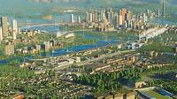

Microsoft Flight Simulator 2024
Microsoft Flight Simulator 2024 menawarkan pengalaman terbang yang sangat realistis dengan grafis menakjubkan dan data dunia nyata. Pemain dapat menjelajahi berbagai lokasi di seluruh dunia, dari kota besar hingga pedesaan terpencil, dengan detail yang luar biasa. Game ini juga menyediakan berbagai jenis pesawat dan kondisi cuaca dinamis, memberikan pengalaman terbang yang mendalam dan autentik.
Farming Simulator 22
Farming Simulator 22 memungkinkan pemain merasakan kehidupan sebagai petani modern. Game ini menawarkan berbagai aktivitas pertanian seperti menanam tanaman, beternak hewan, dan mengelola sumber daya. Dengan grafis yang ditingkatkan dan mekanika permainan yang realistis, pemain dapat mengoperasikan berbagai mesin pertanian dari merek terkenal dan mengelola lahan pertanian mereka sendiri.
Cities: Skylines 2
Cities: Skylines 2 adalah game simulasi pembangunan kota yang memungkinkan pemain merancang dan mengelola kota impian mereka. Dengan sistem yang lebih kompleks dan AI yang lebih cerdas, pemain dapat mengatur infrastruktur, transportasi, dan layanan publik untuk memastikan kesejahteraan penduduk. Game ini menawarkan kebebasan kreatif yang luas dan tantangan dalam mengatasi masalah perkotaan.